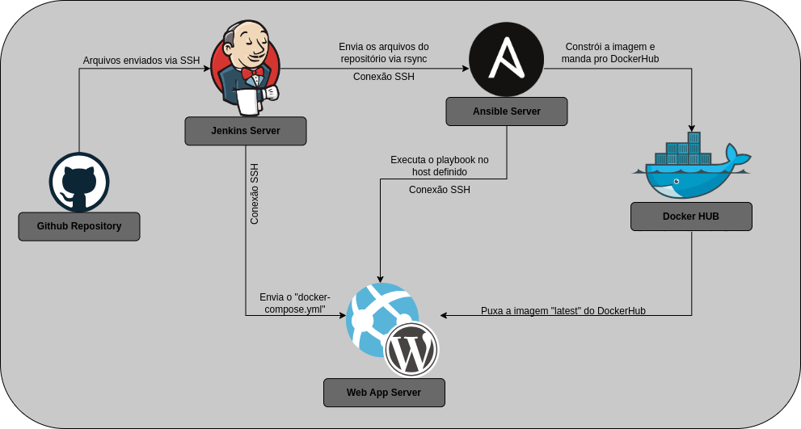

Bem vindo a documentação sobre o meu projeto de Devops e CI/CD!
Irei te ensinar como você pode instalar e fazer o "deploy" de aplicações web com Git, Jenkins, Ansible e Docker.
- Para facilitar a compreensão, recomendo que você analise esse diagrama que mostra como vai funcionar a comunicação entre os servidores:

Configurando os servidores
Nota: Primeiramente, você precisa ter 3 servidores, um para o jenkins, outro para o ansible e o outro para a aplicação que desejamos instalar.
Configure o arquivo hosts dos nodes
No seu server, você deve declarar quem é o ansible-node, quem é o jenkins-node e quem é o webapp-node para atribuir um IP à esses nodes.
Para fazer isso você deve alterar o arquivo "hosts", para isso, execute o seguinte comando: nano /etc/hosts
- Agora você pode modificar o arquivo, use meu arquivo hosts como referência.
127.0.0.1 localhost
127.0.1.1 ansible-node
172.24.9.81 jenkins-node
172.24.9.80 webapp-node
# LEMBRE-SE! Mude os IPs e os hostnames de acordo com sua necessidade, um IP e hostname que sirvam para mim podem não servir para você e vice-versa.
Crie uma chave SSH para os nodes
Antes de tudo, você deve mudar uma linha em um arquivo de configuração do sistema, execute o seguinte comando:
nano /etc/ssh/sshd_config
# Altere a linha que contém "PermitRootLogin", ela deve ficar desse jeito:
PermitRootLogin yes
Para aplicar as alterações feitas, reinicie o serviço de sshd, você pode usar o comando sudo systemctl restart sshd
Para a conexão do cluster funcionar, precisamos da chave SSH. Somente assim as máquinas poderão comunicar-se entre si com segurança e agilidade. Execute o seguinte comando nos dois nodes para gerar a chave SSH:
ssh-keygen -t ed25519
# Agora é só apertar "enter" até cansar
Após isso, vamos criar um arquivo de configuração ssh nos dois nodes para automatizar a "passagem" das chaves SSH de um node para o outro. Crie um arquivo de configuração ssh com o comando nano ~/.ssh/config
Host ansible-node
Hostname ansible-node
User root
Host jenkins-node
Hostname jenkins-node
User root
Host webapp-node
Hostname webapp-node
User root
# LEMBRE-SE! Mude o 'Host' e 'hostname' de acordo com sua necessidade
Além disso, mude as permissões do arquivo de configuração nos dois nodes com chmod 600 ~/.ssh/config
Por fim, execute esses comandos, nos três servers, para "enviar" a chave ssh de um node para o outro:
ssh-copy-id ansible-node
ssh-copy-id jenkins-node
ssh-copy-id webapp-node
Atenção: Para que a chave ssh seja autenticada pelo Jenkins, em cada node, você deve acessar cada servidor manualmente via ssh, exemplo:
ssh root@ansible-node
ssh root@jenkins-node
ssh root@webapp-node
Instalando o Jenkins no jenkins-node
Você pode instalar o Jenkins com o script que eu disponibilizei no repositório devops-ci-cd-project. Há duas maneiras que você pode ter acesso ao script:
- 1° Opção: Clone o repositório para fazer o download do script.
git clone https://github.com/EduardoVasconceloss/devops-ci-cd-project.git
cd devops-ci-cd-project
./install-jenkins.sh
- 2° Opção: Crie o arquivo do script localmente com o comando
nano install-jenkins.she cole o código abaixo no arquivo criado.
#!/bin/bash
# Script de instalação do Jenkins no Debian 12
curl -fsSL https://pkg.jenkins.io/debian-stable/jenkins.io-2023.key | sudo tee \
/usr/share/keyrings/jenkins-keyring.asc > /dev/null
echo deb [signed-by=/usr/share/keyrings/jenkins-keyring.asc] \
https://pkg.jenkins.io/debian-stable binary/ | sudo tee \
/etc/apt/sources.list.d/jenkins.list > /dev/null
sudo apt update -y
sudo apt install -y fontconfig openjdk-17-jre-headless openjdk-17-jre
sudo apt install -y jenkins
Lembre-se: Se você optar por fazer a 2° opção, você deve mudar as permissões do arquivo "install-jenkins.sh" com o comando
chmod +x install-jenkins.sh. Agora para executar o script basta executar./install-jenkins.sh
Instalando o Ansible e Docker no ansible-node
Nota: Você pode instalar o Ansible e o Docker com os scripts que eu disponibilizei no repositório devops-ci-cd-project.
- 1° Opção: Clone o repositório para fazer o download do script.
git clone https://github.com/EduardoVasconceloss/devops-ci-cd-project.git
cd devops-ci-cd-project
./install-ansible.sh
./install-docker.sh
-
2° Opção: Crie os arquivos de script localmente com os comandos
nano install-ansible.shenano install-docker.sh. Agora cole os códigos abaixo nos seus respectivos arquivos criados: -
Script de instalação do Ansible:
#! /bin/bash
# Atenção: esse script foi criado para instalar o ansible no Debian 12.
# Atualiza os repositórios, pacotes e instala o Ansible.
sudo apt update -y
sudo apt install -y ansible
# Verifica a versão do Ansible instalada
ansible --version
# Verifica se o diretório /etc/ansible existe e cria caso não exista
if [ ! -d "/etc/ansible" ]
then
sudo mkdir /etc/ansible
fi
# Verifica se o arquivo ansible.cfg existe e remove caso exista
if [ -e "/etc/ansible/ansible.cfg" ]
then
sudo rm /etc/ansible/ansible.cfg
fi
# Cria o arquivo ansible.cfg
echo [defaults] | sudo tee /etc/ansible/ansible.cfg
echo inventory = /etc/ansible/hosts | sudo tee -a /etc/ansible/ansible.cfg
echo remote_user = root | sudo tee -a /etc/ansible/ansible.cfg
echo private_key_file = /root/.ssh/id_ed25519 | sudo tee -a /etc/ansible/ansible.cfg
# Verifica se o arquivo hosts existe e remove caso exista
if [ -e "/etc/ansible/hosts" ]
then
sudo rm /etc/ansible/hosts
fi
# Cria o arquivo hosts
echo [ansible-node] | sudo tee /etc/ansible/hosts
echo <ip-do-ansible-node> | sudo tee -a /etc/ansible/hosts # Coloque o IP do ansible-node
echo [webapp-node] | sudo tee -a /etc/ansible/hosts
echo <ip-do-webapp-node> | sudo tee -a /etc/ansible/hosts # Coloque o IP do webapp-node
- Script de instalação do Docker:
#!/bin/bash
# Atenção: esse script foi criado para instalar o ansible no Debian.
# Atualiza os repositórios e pacotes
sudo apt update -y
# Instala dependências para permitir que o APT use repositórios HTTPS
sudo apt install -y apt-transport-https ca-certificates curl software-properties-common
# Adiciona a chave GPG oficial do Docker
curl -fsSL https://download.docker.com/linux/debian/gpg | sudo gpg --dearmor -o /usr/share/keyrings/docker-archive-keyring.gpg
# Configura o repositório estável do Docker
echo "deb [signed-by=/usr/share/keyrings/docker-archive-keyring.gpg] https://download.docker.com/linux/debian $(lsb_release -cs) stable" | sudo tee /etc/apt/sources.list.d/docker.list
# Atualiza os repositórios mais uma vez
sudo apt update -y
# Instala o Docker Engine
sudo apt install -y docker-ce docker-ce-cli containerd.io docker-buildx-plugin docker-compose-plugin docker-compose
# Adiciona o usuário atual ao grupo do docker para executar comandos Docker sem o "sudo"
sudo usermod -aG docker $USER
# Habilita e inicia o serviço do Docker
sudo systemctl enable docker
sudo systemctl start docker
# Verifica a versão do Docker instalada
docker --version
Lembre-se: Se você optar por fazer a 2° opção, você deve mudar as permissões dos arquivos
install-ansible.sheinstall-docker.shcom os comandoschmod +x install-ansible.shechmod +x install-docker.sh. Agora para executar os scripts basta rodar os comandos./install-ansible.she./install-docker.sh.
Configurando o Ansible e Docker no ansible-node
Você deve editar o arquivo de configuração do ansible para que possamos executar o playbook sem problemas.
- Acesse o diretório do ansible com o comando
cd /etc/ansible/e altere o arquivo de configuração do ansible com o comandonano ansible.cfg.
# O seu "ansible.cfg" deve estar com essa configuração:
[defaults]
inventory = /etc/ansible/hosts
remote_user = root
private_key_file = /root/.ssh/id_ed25519
- Agora altere seu arquivo "hosts" para que o ansible se conecte com outros servidores.
[ansible-node]
<IP-do-ansible-node>
[jenkins-node]
<IP-do-jenkins-node>
[webapp-node]
<IP-do-webapp-node>
- Por fim, faça o login com sua conta do Dockerhub para ter poder fazer o upload de suas imagens.
docker login
Instalando e configurando o Docker no webapp-node
Nota: Você pode instalar o Ansible e o Docker com os scripts que eu disponibilizei no repositório devops-ci-cd-project.
- 1° Opção: Clone o repositório para fazer o download do script.
git clone https://github.com/EduardoVasconceloss/devops-ci-cd-project.git
cd devops-ci-cd-project
./install-docker.sh
-
2° Opção: Crie o arquivo do script localmente com o comando
nano install-docker.sh. Agora cole o código abaixo nos arquivo criado: -
Script de instalação do Docker:
#!/bin/bash
# Atenção: esse script foi criado para instalar o ansible no Debian.
# Atualiza os repositórios e pacotes
sudo apt update -y
# Instala dependências para permitir que o APT use repositórios HTTPS
sudo apt install -y apt-transport-https ca-certificates curl software-properties-common
# Adiciona a chave GPG oficial do Docker
curl -fsSL https://download.docker.com/linux/debian/gpg | sudo gpg --dearmor -o /usr/share/keyrings/docker-archive-keyring.gpg
# Configura o repositório estável do Docker
echo "deb [signed-by=/usr/share/keyrings/docker-archive-keyring.gpg] https://download.docker.com/linux/debian $(lsb_release -cs) stable" | sudo tee /etc/apt/sources.list.d/docker.list
# Atualiza os repositórios mais uma vez
sudo apt update -y
# Instala o Docker Engine
sudo apt install -y docker-ce docker-ce-cli containerd.io docker-buildx-plugin docker-compose-plugin docker-compose
# Adiciona o usuário atual ao grupo do docker para executar comandos Docker sem o "sudo"
sudo usermod -aG docker $USER
# Habilita e inicia o serviço do Docker
sudo systemctl enable docker
sudo systemctl start docker
# Verifica a versão do Docker instalada
docker --version
Lembre-se: Se você optar por fazer a 2° opção, você deve mudar as permissões do arquivo
install-docker.shcom o comandochmod +x install-docker.sh. Agora para executar o script basta rodar o comando./install-docker.sh.
- Por fim, faça o login na sua conta do Dockerhub.
docker login